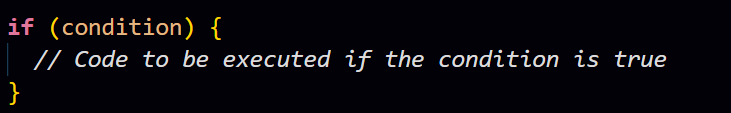
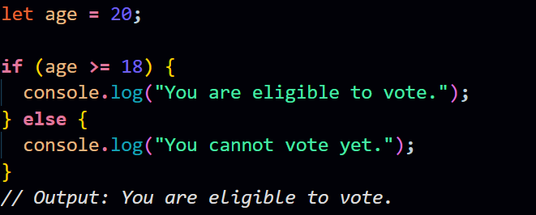
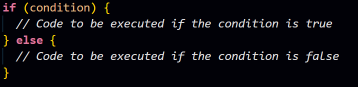
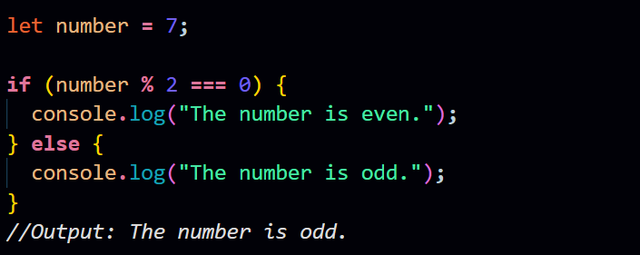
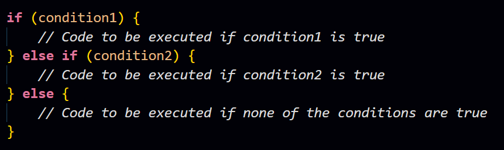
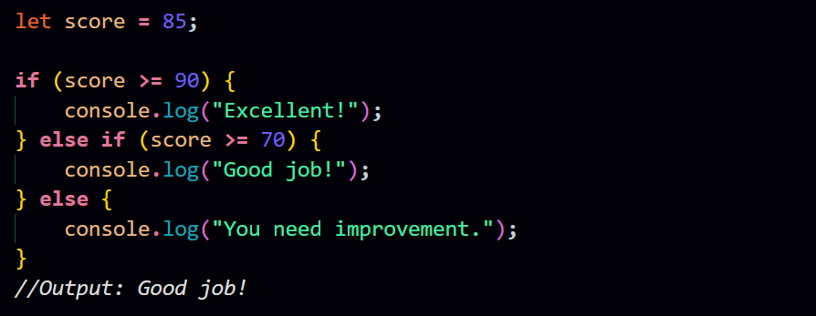

Q. What are conditional statements? Explain conditional statements with syntax and examples.
Ans.
Conditional statements are programming constructs that allow you to execute different blocks of code based on whether a specified condition evaluates to true or false. They are crucial for controlling the flow of a program, enabling you to make decisions and execute specific code paths based on the given conditions.
There are primarily two types of conditional statements in most programming languages:
-
If Statement:
- The if statement is used to execute a block of code if a specified condition is true.
- Syntax: 
- Example: 
-
If-Else Statement:
- The if-else statement allows you to execute one block of code if the condition is true and another block if it is false.
- Syntax: 
- Example: 
-
If-Else If-Else Statement:
- The if-else if-else statement allows you to test multiple conditions in sequence and execute the block of code associated with the first true condition.
- Syntax: 
- Example: 
These conditional statements allow you to control the execution flow of your program based on specific conditions, making your code more flexible and responsive to different scenarios.